This board reads the competition the way the new website must answer it. The deep retail and pricing analysis lives in the client workspace Market Audit. This document ranks the rivals a web visitor actually meets, shows what they look like, and ends with the five things the new site must do that none of the audit's nine rivals currently does.
"Buyers open by asking: can you create taste similar like Buldak, Indomie?"
That sentence, Christina's, sets the competitive frame. Overseas trade buyers benchmark Vit's against Samyang's Buldak and Indomie's mi goreng before any Malaysian brand is mentioned. At home the shelf fight is with Maggi, Mi Sedaap and Cintan on price, and MyKuali, Red Chef and Mamee Chef on premium local flavour. Vit's is known for plain noodles, roughly 70% of revenue, and by their own account almost nobody knows they make seasoned noodles. The website's competitive job is therefore double: prove seasoning capability to a trade buyer, without disturbing the plain-noodle base at home.
| # | Rival | Arena | Why they rank here | Per packet |
|---|---|---|---|---|
| 1 | Samyang (Buldak) | Global, and the buyer's benchmark | FY2025 revenue KRW2.35tn, up 36%, roughly 80% overseas. The name buyers say first. Sells at 4.9x Maggi Kari in Malaysia | RM5.70 |
| 2 | Indomie | Global halal volume | The other name buyers say. Indonesian scale, distribution everywhere Vit's wants to sell | n/a, not listed at retailers checked |
| 3 | MyKuali | Premium Malaysian curry | Owns Penang White Curry globally, world No.1 Ramen Rater 2014, No.2 and 3 on the Malaysia 2025 list | RM2.90 |
| 4 | Nongshim | Halal push into Malaysia | Launched a halal Shin Ramyun built for Malaysia, July 2026, nationwide plus TikTok Shop. Halal is no longer Vit's moat | n/a |
| 5 | Red Chef | Premium Malaysian, product-led | No.1 on the Malaysia 2025 list with a non-fried, additive-clean noodle: nearly the spec of Vit's own air-dried line | premium tier |
| 6 | Mamee Chef | The manoeuvre peer | A legacy Malaysian maker that launched a premium sub-brand on local dishes and got world-rated. Curry is still open | premium tier |
| 7 | Maggi | Malaysian value shelf | Cheapest food per gram on the shelf with Maggi Big, plus the Syiok and Letup ranges bracketing Vit's price | RM1.16 to 1.78 |
| 8 | Mi Sedaap | Malaysian value shelf | Indonesian value player, Korean Spicy line at RM1.72 shows value brands stealing premium cues | RM1.16 to 1.72 |
| 9 | Cintan, Ibumie | Malaysian value shelf | Legacy value pressure, Ibumie's Penang White CurryMee sits on the 2025 list at No.10 | RM1.26 |
| 10 | OEM factories, CN/TH/VN | The trade-floor fight | At Gulfood the stand next door is a factory with published MOQs and lead times. They win on price and disclosure, not brand | trade pricing |
Two boards. First the shelf: pack captures held from the July market audit, because the packs are the visual system every rival's website inherits. Then the sites themselves, captured live at 1280 by 860 on 13 August 2026 with a real browser user agent, every capture opened and looked at.
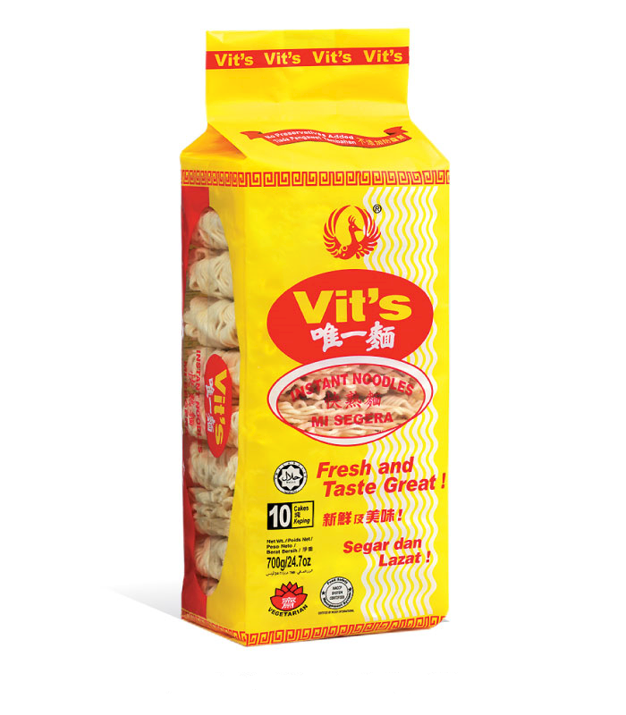
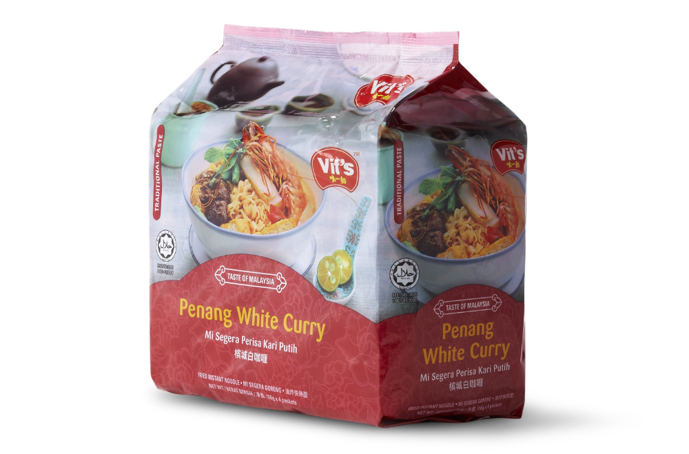
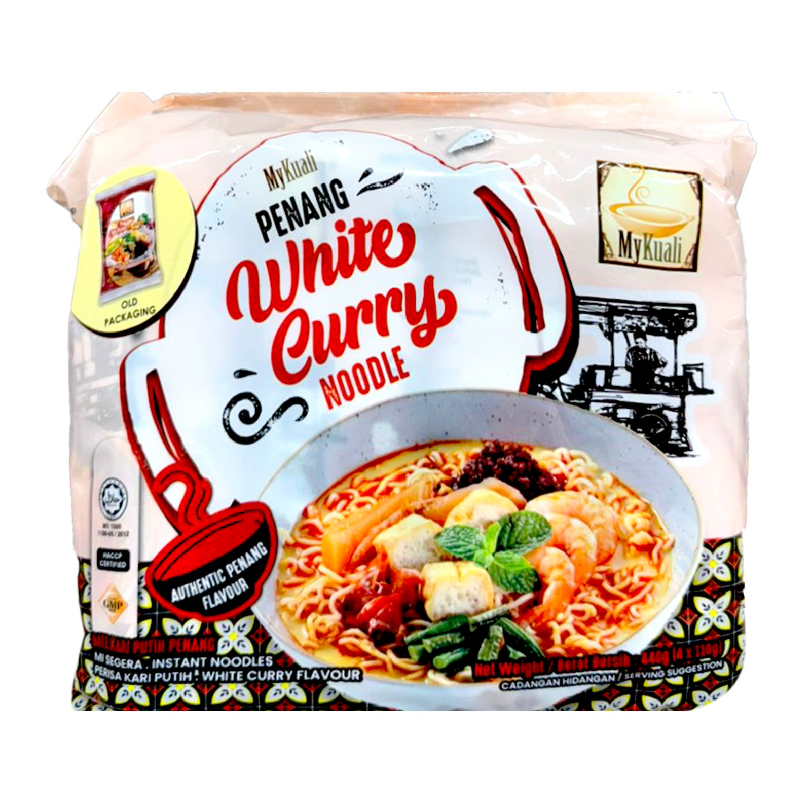
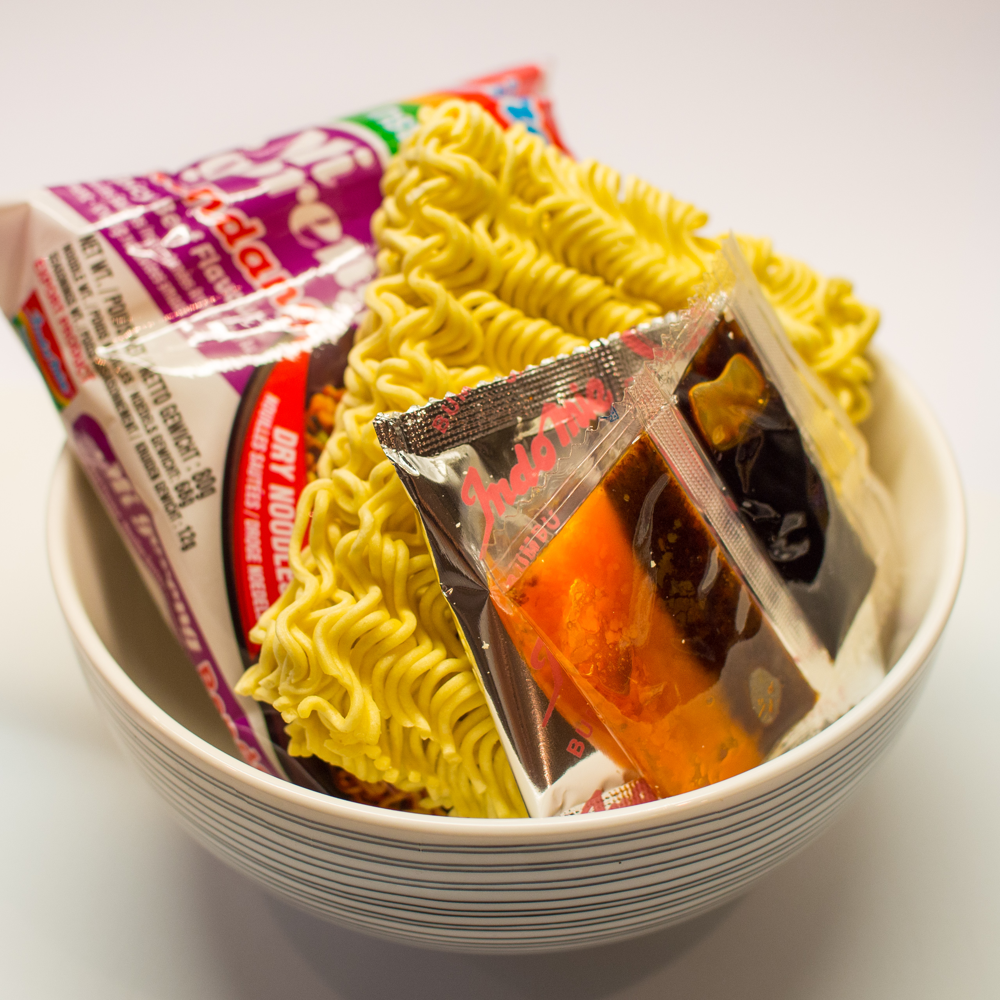
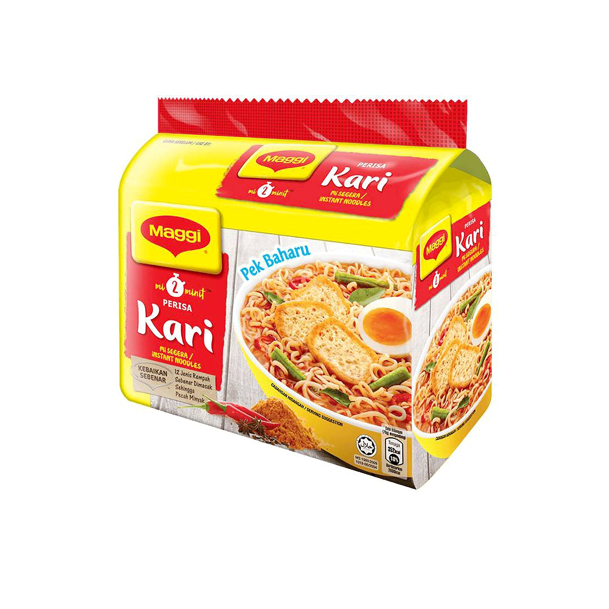
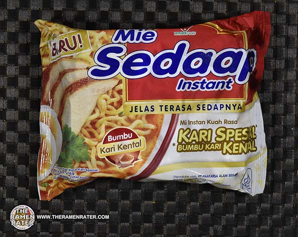
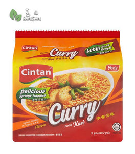
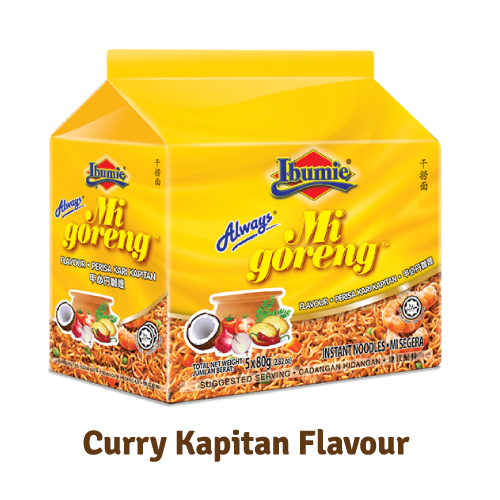
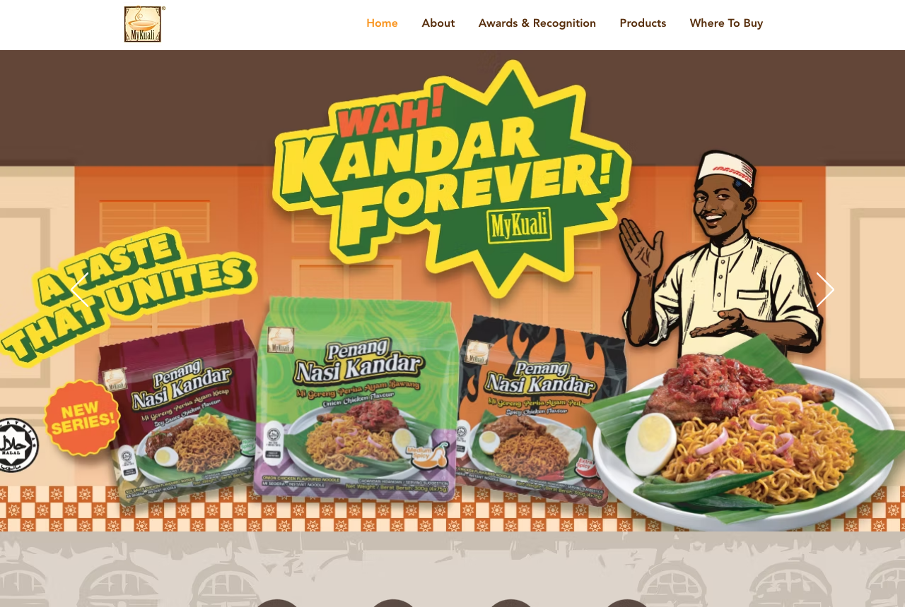
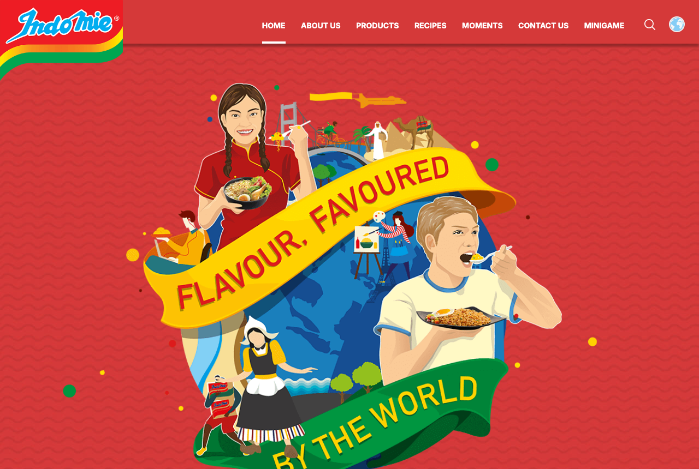
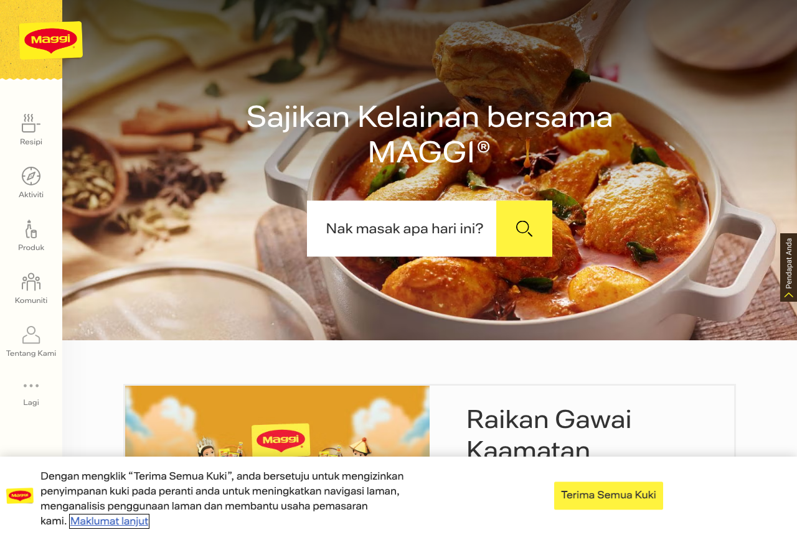
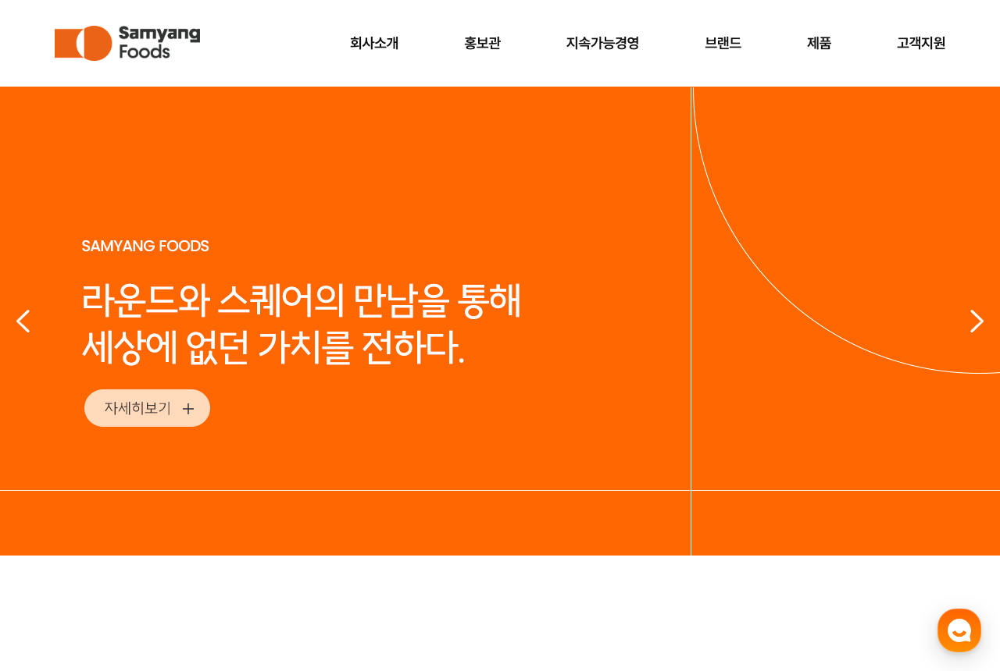
Extreme-heat identity at premium price: RM28.50 for a 140g x 5 multipack in Malaysia, RM5.70 a packet, 4.9x Maggi Kari. FY2025 revenue KRW2.35tn, up 36%, operating margin around 22%, roughly 80% of it overseas.
The challenge mechanic: a printed Scoville number and a dare, made famous by a 2014 viral video. Western and SEA markets found Buldak through content, not the shelf. In Malaysia: 188 results for "samyang" at Jaya Grocer and a TikTok Shop presence.
Malaysian authenticity. Buldak's original is only 4,404 SHU, the heat story is theatre, and rempah-based flavour depth is not their game. They also cannot claim a 51-year halal heritage, JAKIM-certified since 1980.
The heat ladder: three rungs, heat from rempah not raw capsaicin, a number printed on every pack from launch. The one part of the Buldak playbook nobody in Malaysia has copied, and Vit's already owns the Hotlicious seed.
One famous flavour: Penang White Curry, world No.1 on the Ramen Rater Top Ten 2014, No.2 all-time 2015, and still No.2 and No.3 on the Malaysia 2025 list. RM2.90 a packet, 2.5x Maggi Kari.
Earned authority: international list rankings, food-tuber coverage, then export distribution. Founded 2011, the noodle launched May 2013, and by November 2013 it was moving 50,000 cartons a month.
Range breadth and manufacturing scale. MyKuali is a brand with a co-packer's depth, not a 51-year factory with OEM capacity, an air-dried line and four exhibition lanes a year.
Never launch on their flavour. The flagship recommendation is Sarawak Curry Laksa, then Melaka Curry Kapitan, with Penang deliberately later. The site's curry story is a map of Malaysia, not one street in Penang.
Sesame Hae Bee Hiam, No.1 on the Ramen Rater Malaysia Top Ten 2025: non-fried, trans-fat-free, no added preservatives, no artificial colours, halal and HACCP, one regional flavour.
Product spec as marketing. The clean-label claims are the content, list rankings are the distribution.
Match Vit's production reality: Red Chef's winning spec is nearly line for line what Vit's air-dried Healthy Series already is, air-dried, high fibre, trans-fat-free, coloured by real spinach and tomato, and Vit's owns the factory.
Promote air-dried from side line to Pillar. The site gives the air-dried process its own capability page, with the spec table Red Chef markets, backed by a plant Red Chef does not own.
Capacity. Chinese, Thai and Vietnamese factories with published MOQ tiers, container pricing and lead times, competing on disclosure and price. Traditional OEM minimums run 10,000+ units per SKU.
Trade platforms and exhibition follow-up. Tiered MOQ listings convert materially better than single-figure or absent MOQs, which is the industry's own conversion data.
A 51-year brand story, JAKIM halal since 1980 with preferential Middle East access, a retail brand as proof the factory's own products sell, and Malaysian spice heritage as the seasoning story.
The trade destination publishes what buyers check, MOQ tiers, capacity, lead time, certifications, formats, wrapped in the one thing the factories cannot copy: a brand.
| Rival | Their lesson | What the Vit's site takes |
|---|---|---|
| Samyang | A printed number plus a dare beats vague "spicy" | Heat ladder with a number on every pack, filmable top rung |
| Indomie | The sachet ritual is the experience | The cook-the-noodle finale in the demo, sachets and all |
| MyKuali | One owned flavour can carry a company abroad | Own an unclaimed flavour, tell it as a place story |
| Nongshim | Halal is now table stakes, channels are the fight | Halal-since-1980 stated as history, not as moat |
| Red Chef | Clean spec, told plainly, wins lists | Air-dried capability page with the full spec table |
| Mamee Chef | A legacy maker can launch premium and be believed | The manoeuvre is proven, curry is the open lane |
| Maggi, Mi Sedaap, Cintan | Value shelf communicates price per meal instantly | Publish gram weights so Vit's stops losing a comparison it could win |
| OEM factories | Disclosure converts buyers | MOQ tiers, capacity and lead time published on the trade destination |
A capability story a buyer can taste with their eyes: the seasoning directions the factory runs, with the curry range as exhibit A. No rival frames their factory this way, and it answers the buyer's opening question before the first email.
MOQ tiers, capacity, lead time. On this board only the anonymous OEM factories do it, and none of them wrap it in a brand. First mover among branded Malaysian makers wins the follow-up meeting.
Every rival shows flat pack photography. A pack you can turn, that opens and cooks as you scroll, is a shelf of one. It also proves the site can be rich and light at once, which is the client's stated doubt.
Rivals either sell consumers (MyKuali, Red Chef) or buyers (factories). Nobody serves both without confusion. Two front doors, one brand, is the structural win the audit specifies.
51 years, halal since 1980, 30 years exporting: told as dated, sourced facts with the carton and the plant as imagery. On a floor of unnamed factories, provenance is the differentiator that costs nothing new.